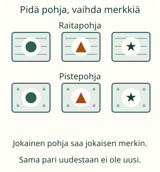

<link rel="stylesheet" href="lesson.css">
<section data-b03="M-TH-07">
<section data-teaching-step="1" data-lesson-role="teaching-step">
<h2>Aavan kaikki retkimerkit</h2><div class="lesson-intro"><p>Aava valitsee retkimerkkiin yhden pohjan ja yhden kuvion. Miten kaikki erilaiset merkit löytyvät?</p></div><p><strong>Tavoite: etsin kaikki vaihtoehdot niin, ettei mikään puutu tai toistu.</strong></p>
</section>


<section data-teaching-step="2" data-lesson-role="teaching-step">
<h3>Kokeile ensin korteilla</h3><p>Tee kaksi pohjakorttia: raitapohja ja pistepohja. Tee kuviokortit: ympyrä, kolmio ja tähti. Yhdistä aina yksi pohja ja yksi kuvio. Kirjaa valmis pari.</p>
<figure data-lesson-role="worked-example"><figcaption>Pidä yksi pohja paikallaan ja kokeile sen kanssa jokainen kuvio. Sitten vaihda pohjaa.</figcaption></figure>
</section>


<section data-teaching-step="3" data-lesson-role="teaching-step">
<h3>Kuusi yritystä ei aina ole kuusi erilaista</h3><p>Jos teet raitapohjan ja tähden kahdesti, sama merkki toistuu. Yrityksiä voi olla kuusi ja jokin merkki silti puuttua. Tarkista eri parit, älä vain yritysten määrää. Myös sattumalta voi löytää kaikki; lista auttaa varmistamaan sen.</p>
</section>


<section data-teaching-step="4" data-lesson-role="teaching-step">
<h3>Uusi tilanne: kahden rastin yhteys</h3><p>Neljän rastin välille tehdään jokainen kahden rastin yhteys kerran. Teltta–Laituri ja Laituri–Teltta ovat sama yhteys. Tämä eroaa pohjan ja kuvion valinnasta: rasteilla kummallakaan päällä ei ole omaa erilaista tehtävää.</p>
</section>


<section data-teaching-step="5" data-lesson-role="teaching-step">
<p data-lesson-role="question"><strong>Ennusta:</strong> jos olet tehnyt kuusi merkkiä, miten tarkistat, etteivät ne sisällä samaa paria kahdesti?</p>
</section>


<section data-teaching-step="6" data-lesson-role="teaching-step">
<section class="practice" aria-label="Vaihtoehtojen rakentaminen" data-audience-columns><div data-visual-column><h3>Rakenna kaikki parit</h3>
<p>Valitse pohja ja kuvio. Lisää pari listaan. Saat käyttää omaa järjestystäsi. Lisääminen ei vaihda valittua pohjaa.</p>
<fieldset><legend>Pohja</legend><div class="controls" data-backgrounds></div></fieldset>
<fieldset><legend>Kuvio</legend><div class="controls" data-emblems></div></fieldset>
<div class="scene" data-preview></div></div><div data-response-column><p data-selection role="status">Valitse yksi pohja ja yksi kuvio.</p>
<div class="controls"><button type="button" data-action="add-pair">Lisää pari listaan</button><button type="button" data-action="check-pairs">Tarkista kaikki vaihtoehdot</button><button type="button" data-action="hint">Anna hakuvihje</button><button type="button" data-action="clear-pairs">Lista alkuun</button></div>
<ol class="record" data-record></ol>
<p data-pairs-feedback role="status">Lista odottaa omia pareja.</p><details data-lesson-role="hint"><summary>Apua</summary><p>Pidä raitapohja paikallaan. Kokeile sen kanssa ympyrä, kolmio ja tähti. Vaihda vasta sitten pohjaa. Jos käytät omaa tapaa, tarkista että jokainen pohja kohtaa jokaisen kuvion.</p></details></div></section>
</section>


<section data-teaching-step="7" data-lesson-role="teaching-step">
<details data-lesson-role="teaching-step"><summary>Kokeile siirtoa: rastien yhteydet</summary><p>Valitse kaksi rastia ja lisää niiden yhteys. Sama rasti ei muodosta paria itsensä kanssa. Etsi kaikki eri yhteydet.</p><div class="stations" data-stations></div><p data-endpoints role="status">Valitse ensimmäinen ja toinen rasti.</p><div class="controls"><button type="button" data-action="add-link">Lisää yhteys</button><button type="button" data-action="check-links">Tarkista yhteydet</button><button type="button" data-action="clear-links">Yhteydet alkuun</button></div><div class="scene" data-network></div><ul data-link-record></ul><p data-links-feedback role="status">Jokainen rastipari kerran.</p></details>
<details data-lesson-role="hint"><summary>Apua rastien yhteyksiin</summary><p>Aloita yhdestä rastista ja yhdistä se kuhunkin muuhun. Siirry seuraavaan rastiin. Lisää vain vielä puuttuvat yhteydet: Teltta–Laituri on sama yhteys kuin Laituri–Teltta. Viivojen risteykset eivät ole uusia rasteja.</p></details>
</section>


<section data-teaching-step="8" data-lesson-role="teaching-step">
<details data-lesson-role="teaching-step"><summary>Tutki lisää</summary><p>Mitä uusia pareja tulee, jos lisäät yhden pohjan? Entä jos yksi pari kielletään? Tavallinen kertolasku kertoo kokonaismäärän vain silloin, kun jokainen ensimmäinen valinta voi yhdistyä jokaiseen toiseen.</p></details>
</section>

<details class="teacher" data-lesson-role="teacher-note"><summary>Aikuiselle: järjestelmällisyys ja rajat</summary><p>Kanoninen luokka-alue 3–6, prosessirooli. M-TH-02 ja M-TH-03 ovat vahvoja tukia, eivät required-lukkoja. Päätehtävä luettelee kuvapareja; kertolasku ja kaksinumeroisten lukujen muodostaminen eivät ole pakollisia.</p><p>Kaikki täydelliset luettelointijärjestykset hyväksytään. Lista säilyy lapsen lisäämisjärjestyksessä. Valmis joukko yksin ei kerro, käyttikö lapsi järjestelmällistä strategiaa. Kysy, miksi mitään ei puutu. Tukivihje ei ole riippumatonta näyttöä.</p><p>Ilman laitetta: tee korttiparit ja kirjaa lista. Rastitehtävässä yhdistä neljä kuvakorttia naruilla. Viivojen risteys ei ole uusi rasti. Ruudun toiminta ei osoita käytännön työskentelytaitoa eikä pysyvää oppimista.</p></details>

<section data-teaching-step="9" data-lesson-role="teaching-step">
<p data-lesson-role="question"><strong>Lopuksi:</strong> miten osoitat, ettei yksikään vaihtoehto puutu?</p>
</section>
</section>